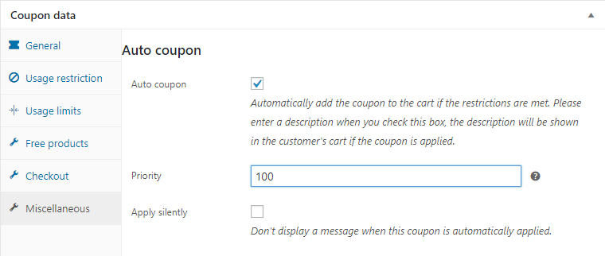

Miscellaneous
Auto coupon

You can easily turn a coupon into a discount rule by selecting the Auto coupon-checkbox in the Miscellaneous tab. When using this option, be sure to enter a description for the coupon, as this will be displayed to the customer.
Once activated, the discount will automatically apply to the cart when the coupon conditions are met, and the description will be shown to the customer, both in the cart and during checkout. If the conditions are no longer met (e.g., the customer removes an item), the discount will be removed.
Apply silently
When this box is checked, no 'Discount applied' notice will be presented when the coupon is applied.
Allow applying when invalid (PRO)
When the box 'Allow applying when invalid' is ticked, a customer can always add the coupon to the cart, but will be presented with a message that the discount will only apply when the conditions are met.
NOTE: This option is not available for 'Auto coupons'.
Coupon by URL
Now you can easily create a link that will automatically apply a coupon to the user's cart, optionally in combination with a product.
Simply append ?apply_coupon=coupon_code to the url. If you also want to add products to the cart with the same url, you can use add-to-cart=product_id and optionally a quantity. You can find the id of a product on the WooCommerce Edit-page of the product.
Example:
(http://www.your-store.nl/cart/?add-to-cart=4321&quantity=3&apply_coupon=my_coupon)[#]
If the customer opens the url when the conditions of the coupon are not yet met or the cart is empty the coupon won't be applied yet, instead the following message will be displayed: Coupon will be applied once it's conditions are met. Once the conditions of the coupon are met it will be applied automatically.